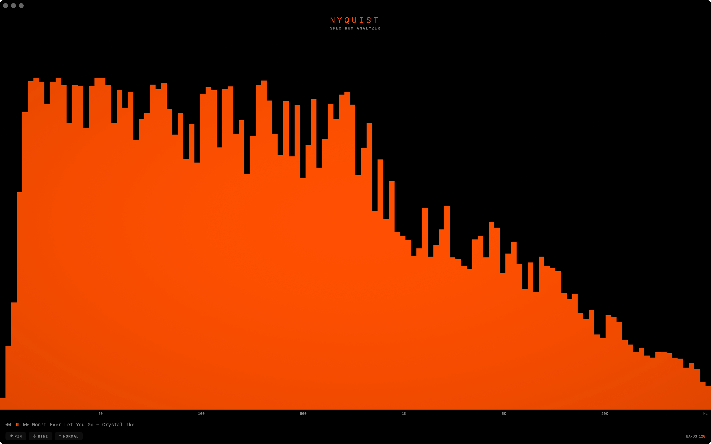

SPECTRUM ANALYZERSee your music. Nyquist is a real-time audio spectrum analyzer for your Mac, built with Metal for silky-smooth visualization at up to 128 frequency bands.
Capture system audio from any app — Apple Music, Spotify, YouTube, games — or switch to your microphone for live input. Watch every frequency come alive, from deep sub-bass to shimmering highs.
High-resolution frequency analysis. Detailed bass-to-treble separation with sub-bin interpolation for precise low-end.
Capture audio from any app. Apple Music, Spotify, YouTube, games — anything playing on your Mac.
GPU-accelerated visualization. Silky smooth, minimal CPU usage. Designed for Apple Silicon and Intel.
See track info from Apple Music and Spotify. Play, pause, skip — without leaving the visualizer.
Compact always-on-top strip. Drag anywhere on your desktop. Now playing info included.
| BANDS | 16 — 128 adjustable |
| MODES | Normal + Mirror |
| COLORS | Orange, Green, Amber, Cyan, White |
| INPUT | System Audio + Microphone |
| GAIN | 0.1x — 5.0x |
| WINDOW | Pin, Mini |
Nyquist processes all audio locally on your device. No data is collected, stored, or transmitted. Audio capture requires your permission and can be revoked at any time in System Settings.